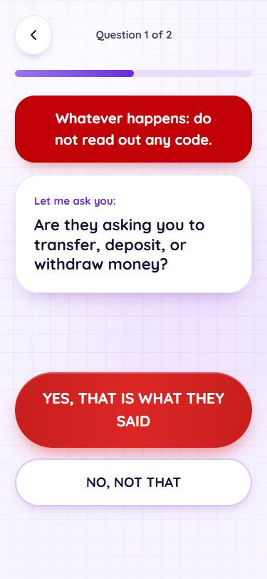
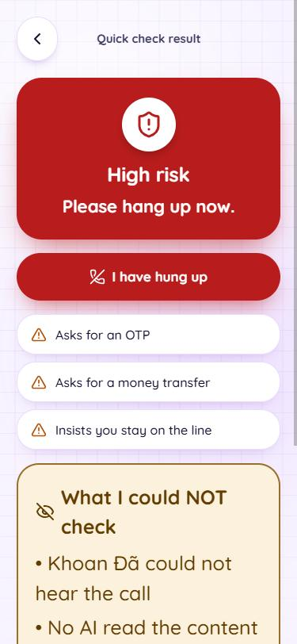
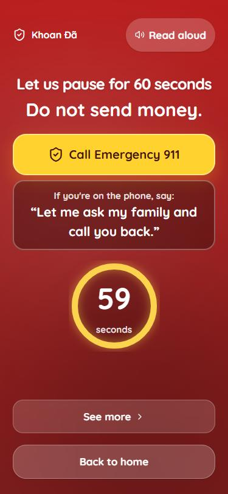
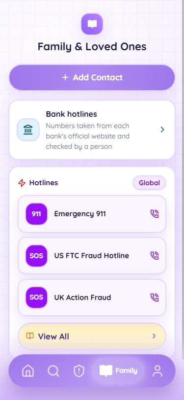

Khoan Đã là trợ lý cảnh giác cho cả gia đình. Khi có ai gọi điện hay nhắn tin yêu cầu chuyển tiền, đưa mã OTP hay cài ứng dụng, Khoan Đã giúp bác dừng lại 60 giây, kiểm tra những dấu hiệu quen thuộc của lừa đảo, và kéo một người thân vào cuộc trước khi làm theo.
Làm cho mọi người, đặc biệt là người lớn tuổi và con cháu của họ, có thêm một khoảng dừng để suy nghĩ trước những cuộc gọi và tin nhắn lừa đảo.
Lan toả, nâng cao nhận thức người dùng về lừa đảo trực tuyến.
Mở Khoan Đã và chạm "Someone calling you?" (hoặc ô nhập để dán nội dung tin nhắn).
Trả lời vài câu hỏi ngắn: họ đang yêu cầu bác chuyển tiền, đọc mã OTP, hay cài ứng dụng? Chỉ cần chạm vào lựa chọn có sẵn.
Đọc kết quả: Nguy hiểm cao thì dừng ngay và không làm theo. Nghi ngờ thì xác minh qua số điện thoại chính thức. Chưa thấy dấu hiệu rủi ro chỉ có nghĩa là trong những gì bác đưa vào chưa thấy dấu hiệu, không phải lời hứa an toàn.
Bấm "Call Family" để con cháu cùng xem trước khi làm bất cứ việc gì liên quan đến tiền.



